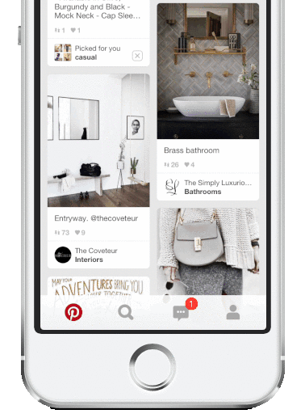
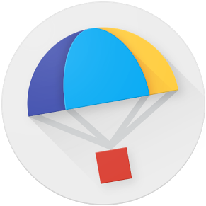
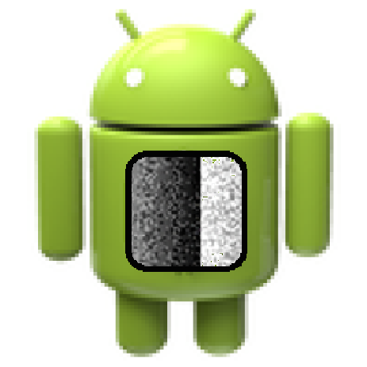

This past summer at Pinterest, I implemented and launched the Pin Feedback tool, which allows iOS users to hide and report Pins through a brand-new user flow (a snippet of which can be seen here). I drove infrastructural changes on the iOS end, worked with backend teams to expose additional APIs, and teamed up with designers to mock up and implement the corresponding frontend changes. Pin Feedback both improves the end-user content discovery experience and allows backend teams to collect user signals in order to surface better content.

Google Express (GSX) is Google's same-day shopping delivery service. I delivered the first-ever, end-to-end GSX mobile web shopping experience, covering all search, product, and home page areas. This allows GSX to reduce mobile latency and strengthen mobile conversion rates. I also tackled an additional project that involved exposing a geocoding API in order to reduce the friction of having to manually select a delivery zone.
(Speaking of mobile web, try resizing this webpage itself - I made it fully responsive!)
As part of the YouTube Multi-Device Experience team in Zurich, I created a feature that makes YouTube TV more socially engaging by displaying toast notifications when a friend joins a session, queues up a video, or edits a playlist. Along the way, I was able to refactor code logic to improve user data fetching-related server metrics by 99 percent, as well as triage and resolve several high-priority issues affecting the end-user payment process.
Moments is a social, photo-based gratitude journal.
With the advent of popular photo-sharing apps such as Instagram and Snapchat, as well as cultural trends such as #100happydays, I wanted to incorporate similar visual and social features into Moments. There was a clear gap in the App Store for a well-designed, social, and visual gratitude journal app.
Our lives have become dominated by technology, and I think we frequently forget to pause and enjoy the moment. Technology should serve as a bridge, not obstacle, to humanity. By giving users an avenue to commemorate and share their positive moments with close ones, I hope that Moments will help people remember to appreciate the small things.
Moments is available on the App Store.

AccessiApp is an Android app prototype that improves the mobile experience for visually impaired users through haptic technology.
Last fall, I worked with a team to develop AccessiApp. We worked with a company called Tangible Haptics, which provided us with devices and APIs that allowed us to simulate texture on mobile screens via vibration physics.
In order to help visually impaired users distinguish between different app icons on the screen, we assigned unique bitmap images to each app, and then used haptics to map each bitmap to a unique tactile texture. Our prototype envisions a universal haptic-mode that could be enabled for mobile devices, with each published app being assigned a randomized and unique corresponding bitmap image. AccessiApp showcases the potential for a new generation of mindful and accessible apps.